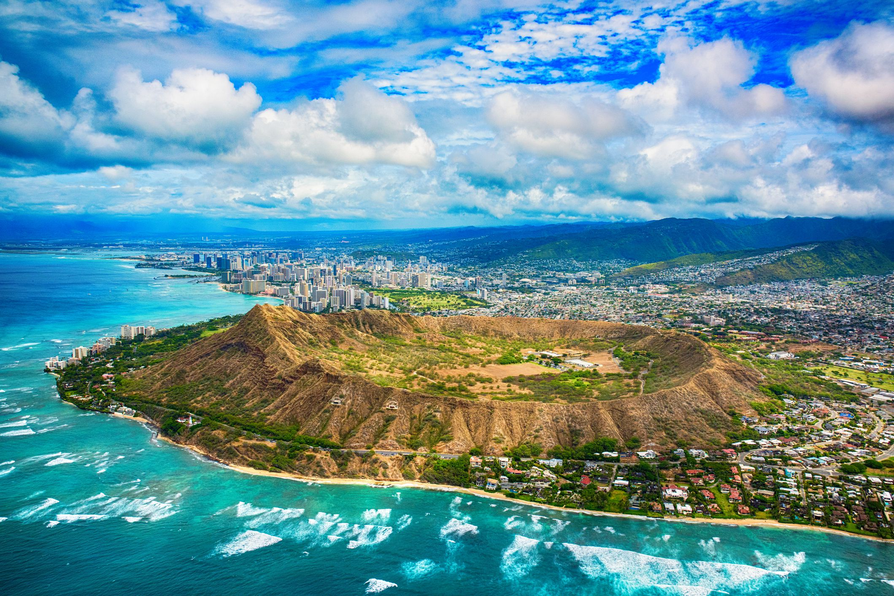

<div class="container project-view">
    
	<div class="row">
        <!-- <div class="col-md-4 project-images" align="center">
            
		</div>
		
        <div class="col-md-4 project-images" align="center">
            
		</div>

        <div class="col-md-4 project-images" align="center">
            
		</div> -->
		

 		<div class="col-md-12">
            <div class="project-info">
                <h2>Thailand 4N 5D - Krabi &amp; Phuket Combo</h2>

                <div class="details">

                    <div class="info-text">
                        <span class="title">Category</span>
                        <span class="val">Honeymoon</span>
                    </div>
                    
                    <div class="info-text">
                        <span class="title">Price</span>
                        <span class="val">INR 87,000 per couple onwards</span>
                    </div>

                    <div class="info-text">
                        <span class="title">Inclusions</span>
                        <span class="val">Accommodation, Breakfast, Hotel Transfers, Ferry transfer</span>
                    </div>
                    
                </div>

				<span class="val">Itinerary</span>
				
				<br/><br/>
				Day 1: Phuket – Krabi: Arrival at Phuket Airport. Pick-up from the airport and transfer to the resort in Krabi. Check in at a resort and the rest of the day free at leisure. Overnight in Krabi.

				<br/><br/>
				
				Day 2: Krabi: After breakfast, enjoy your trip to islands hopping. Amazing island of “Koh Tub” during low tide can walk through the other island for swimming & sunbathing on the beach. 
				Chicken island local landmark, name after the shape of its unique limestone jutting out into the sea. Pranang bay secluded peninsular, 
				inaccessible by a car that well known “Railway beach”. Poda Island, a stunning jewel of the Andaman Sea with both lowland, picturesque bamboo plantation &amp; 
				majestic, rocky cliffs, bordered by long, beautiful beach. Overnight in Krabi. (B, L)

				<br/><br/>

				Day 3: Krabi – Phuket: After breakfast, transfer to Phuket hotel by road. On arrival check in to your hotel. Rest of the day at leisure. Overnight in Phuket (B)

				<br/><br/>

				Day 4: Phuket: After breakfast, board a regular boat for the trip to Phi Phi island, visit the Viking cave with its historic drawings and 
				swallows nest before arriving on the island. Enjoy lunch on the island. Overnight in Phuket. (B, L)

				<br/><br/>

				Day 5: Phuket: After breakfast, check out well in time proceed to Phuket Airport and board the return flight to home. (B)

				<br/><br/>
				<br/><br/>


				<span class="val">Cancellation Policy</span>
				<br/><br/>

				Cancellation Policy may vary from hotel to hotel and will be adviced at the time of reservations. 

            </div>
        </div>
    </div>
</div>